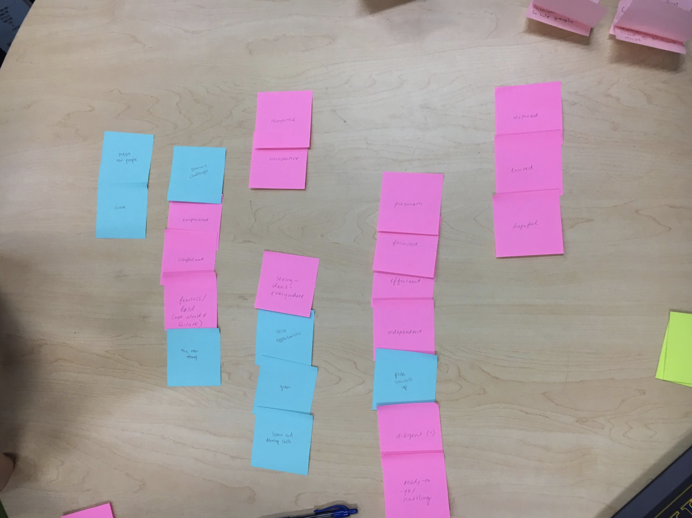
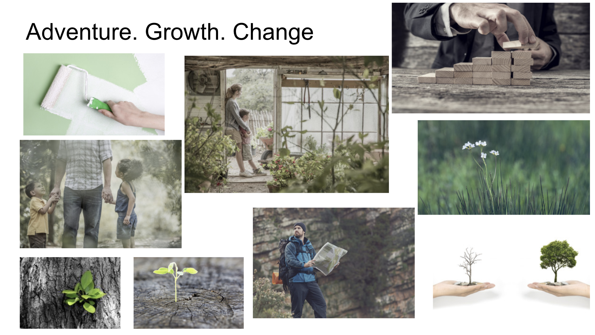
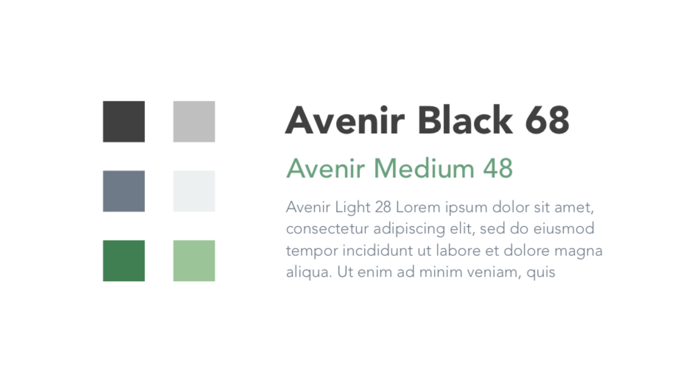

Introduction
AlchemyX is a startup generator founded at UC San Diego that brings students' ideas to life. AlchemyX is looking to rebrand themselves with a website redesign and mobile application that aligns more closely with their mission.
The Challenge
In our needfinding process, we discovered one of the most important resources college students would want when creating a startup was resources. From this, we surveyed 100 college students about their trust in AlchemyX, the current services provided, and what other resources they would like to see provided. We found there was a lack of trust in AlchemyX because there was no 'story' and the resources and services offered were not specific enough. Our goal was to gain college students' trust in AlchemyX and its ability to help students transform their ideas into startups.
My Role
As one of the designers on the newly formed Design team, I led the user research and design of the mobile application, in addition to contributing to the design of the website redesign.
The Discovery
Branding
 Affinitiy Diagram while brainstorming with CEO and CFO about their brand.  Our mood board emcompasses what the mission the CEO and CFO has for AlchemyX. They wanted to make a positive impact by bringing ideas to life and teach college students how to create a startup.  We drew colors from our mood board and felt the gray tones and green tones represented what AlchemyX wanted to portray.
Our stylescape for AlchemyX.
Research
Before I started designing, I did a competitive analysis with Y Combinator, Harvard i-Lab, and The Basement to understand how they approached their website. We found our competitors had an 'About' section, success measurements, a simple interest submission form, and a lot of photos.
For AlchemyX, we felt telling their story through an 'About' page and adding the interest submission form at the navigation bar were important.
I focused on designing and developing our Start Up page in our website redesign effort. From my competitive analysis, I discovered categorizing our startups based on their stages, creating a filtering system, and providing a quick bio of each startup upon hovering would allow for the user to easily learn about the startups.
User Testing
I surveyed 6 participants to test our low-fidelty website prototype and discovered users were able to successfully complete our tasks without any problems. Since many of our competitors only had a mobile responsive site, we decided to base our mobile application on our website prototype. I conducted user testing on our low-fidelty prototype, AlchemyX, and asked 8 participants to complete a set of tasks. The tasks include defining what AlchemyX does, telling us what information you found about any startup, and submitting your own idea. We discovered some key painpoints:
- A lot of scrolling
- Navigating to other startups from the startup profile screen was inconvenient
- Participants expressed they would use the website instead of the mobile application out of convenience
The Deliverables
Driven by our findings, we decided to focus on the website redesign and created a redesign that tells AlchemyX's story and how it creates opportunities for both students wanting to join a startup and to create their own.
The Future
We are currently working on the final website redesign with the design team, CEO, and CFO and will be releasing it soon.